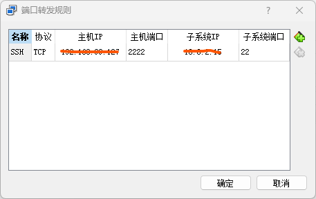
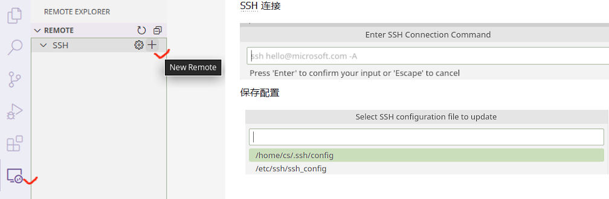
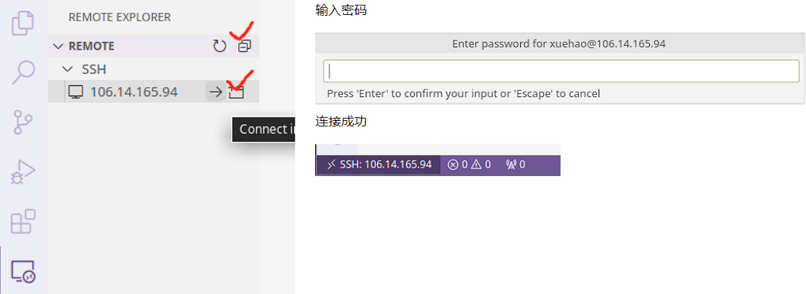

Ubuntu 虚拟机安装及配置
本节目标
本节带大家使用 VirtualBox 安装一个 Ubuntu 22.04 LTS 桌面系统，并尝试使用 OpenSSH 模拟远程登陆。完成本节内容的学习，你应该能够尝试解决以下问题：
- 如何通过 VirtualBox 安装 Ubuntu 虚拟机？
- 如何使用
apt包管理器安装、更新、删除软件包？ - 如何修改 Ubuntu 软件源提高下载速度？
- 如何使用 MSYS2 的
ssh工具访问 Ubuntu 虚拟机？
安装 Ubuntu 虚拟机
VirtualBox 是 Oracle 提供的一款流行的虚拟化软件，可用于 Linux、mac 和 Windows 系统。由于 Linux 系统相对灵活，软件包依赖维护较差，在不熟悉的情况下，很容易造成系统破坏，无法开机等问题。所以，初学阶段没必要在物理机上安装真实的 Linux 系统，就目前的学习而言，虚拟机提供的功能完全够用。一旦虚拟机出现问题，可以直接删除，重新安装。
提前下载 VirtualBox 和 Ubuntu 22.04 LTS 镜像：
详细的安装过程，请跟随课堂视频一步步完成安装。
安装开发工具
apt 命令是一个功能强大的命令行工具，它与 Ubuntu 的高级打包工具（APT）配合使用。 apt 中包含的命令提供了安装新软件包、升级现有软件包、更新软件包列表索引、甚至升级整个 Ubuntu 系统的方法。
尝试安装以下软件：
-
build-essential包含了常用的gcc开发工具sudo apt install build-essential -
安装
gdb、valgrind调试器和内存检测工具sudo apt install gdb valgrind -
安装
git，cmake等常用工具sudo apt install git cmake ninja-build
参考文献：
安装 SSH 工具
OpenSSH 是一个功能强大的工具集，用于远程控制联网计算机以及在联网计算机之间传输数据。OpenSSH 客户端和服务器应用程序的安装非常简单。
使用以下命令在 Ubuntu 系统上安装 OpenSSH 客户端应用程序：
sudo apt install openssh-client
使用以下命令在 Ubuntu 系统上安装 OpenSSH 服务器应用程序：
sudo apt install openssh-server
默认情况下，OpenSSH 服务将会自动启动，也可以使用下述命令手动开启服务：
sudo systemctl start sshd.service
参考文献：
模拟远程登陆
这里需要先配置端口转发，详细的配置过程，请跟随课堂视频一步步完成。

完成端口转发配置后，我们可以使用终端模拟远程登陆：
$ ssh cs@localhost -p 2222
The authenticity of host '[localhost]:2222 ([127.0.0.1]:2222)' can't be established.
ED25519 key fingerprint is SHA256:gfHLfANKNM4cCAoDEZ/CiZ97ql3lfUA2CVM28H6JssM.
This key is not known by any other names.
Are you sure you want to continue connecting (yes/no/[fingerprint])? yes
Warning: Permanently added '[localhost]:2222' (ED25519) to the list of known hosts.
cs@localhost's password:
Welcome to Ubuntu 22.04.3 LTS (GNU/Linux 6.2.0-26-generic x86_64)
* Documentation: https://help.ubuntu.com
* Management: https://landscape.canonical.com
* Support: https://ubuntu.com/advantage
Last login: Tue Aug 15 13:56:00 2023 from 10.0.2.2
VS Code 官方远程插件工作流
前往官网下载安装 VS Code，在插件市场搜索并安装 Remote - SSH 插件。

插件安装完成后，在工具栏选择 Remote Explorer 模块，点击 SSH 后面的 + 号。在弹出的输入窗口中，输入 SSH 登陆地址。
ssh cs@localhost -p 2222
随后会提示选择配置文件保存位置，此处直接“回车”选择默认位置即可。

此时点击 Remote 右侧的刷新按钮，就可以看到服务器 IP。连接该服务器，只需要点击 IP 右侧的箭头，随后输入你的账户密码就可以登录。登录成功后，可以在 VS Code 右下角看到连接状态。

服务器连接成功后，通过 VS Code 菜单栏 File 可以选择 “Open File/Open Folder” 编辑你的文件或项目。